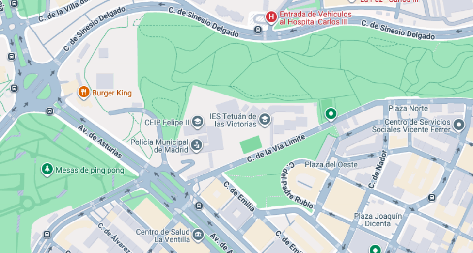
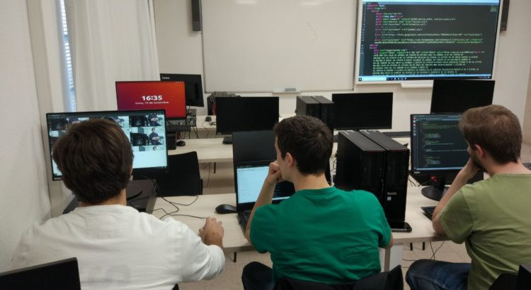
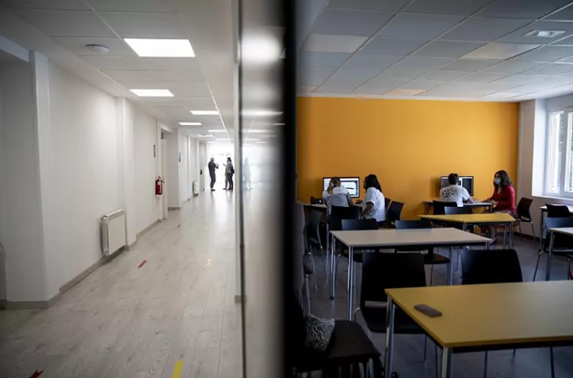
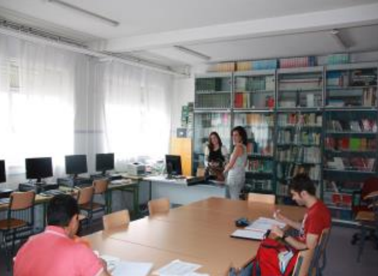

Información y secretaría
Gestiones de admisión, matrícula, expedición de títulos y certificados académicos. Atención presencial y consultas vía correo electrónico oficial.
Tel. 91 314 76 50 · ies.tetuan.madrid@educa.madrid.org
Ubicación y acceso
Una guía para descubrir IES Tetuán de las Victorias: su historia, sus espacios y las preguntas que conviene resolver antes de visitarlo.

Historia del instituto
Inaugurado en el curso 1933-34 como Escuela Oficial de Aprendizaje Industrial, nació para ofrecer formación técnica y profesional a los jóvenes de la zona, evolucionando posteriormente hasta convertirse en el IES actual.
Con los años, el centro adaptó sus instalaciones a la Formación Profesional, incorporando familias profesionales como Informática y Comunicaciones, Administración y Gestión, y Hostelería y Turismo.
En la actualidad es un centro público de referencia en la zona norte de Madrid, que imparte Grados Medios y Superiores (como DAW o ASIR), enfocado en la innovación tecnológica y la empleabilidad del alumnado.

Espacios equipados con proyectores, pizarras digitales y conexión a red para impartir las clases teóricas y realizar trabajos colaborativos.

Aulas específicas con ordenadores para los ciclos de la familia de Informática y Comunicaciones (ASIR, DAW) y talleres equipados para la práctica técnica.

Espacio destinado al estudio individual, consulta de fondos bibliográficos y zona de trabajo y lectura para el alumnado.
Gestiones de admisión, matrícula, expedición de títulos y certificados académicos. Atención presencial y consultas vía correo electrónico oficial.
Tel. 91 314 76 50 · ies.tetuan.madrid@educa.madrid.org
Asesoramiento académico y profesional para el alumnado a través del Departamento de Formación y Orientación Laboral (FOL) y orientación del centro.
Atención bajo cita previa en el centro